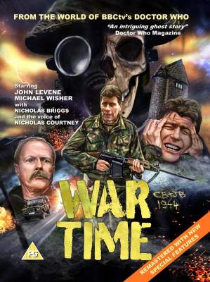
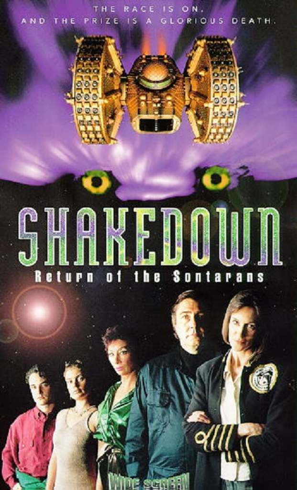

Filmes de Doctor Who
Sinopse:
O Brigadeiro Lethbridge-Stewart irá cruzar seu caminho novamente com Sarah Jane Smith, pois ao passo que ambos se encontram investigando estranhas ocorrências em uma nova universidade comandada por ninguém menos que Victoria Waterfield, todos os três irão enfrentar uma antiga ameaça conhecida pelo seu antigo amigo viajante. Mas dessa vez, eles não terão sua ajuda para impedir o terrível poder dos Yetis e de seu maligno comandante: A Grande Inteligência!
Assistir Online (Legendado)
WARTIME
Sinopse:
Ao liderar o transporte de um perigoso material de alta radiação de volta ao quartel general da UNIT, O Sargento Benton se encontra no meio de um dos mais improváveis conflitos que ele já viveu e corre risco por sua vida, a de seus protegidos e da segurança da importante carga que tem em mãos. Poderá Benton escapar de um mundo repleto de seus próprios pesadelos pessoais e superar sua perda ao enfrentar a figura mais importante de sua vida?
Assistir Online (Legendado)
SHAKEDOWN: RERTURN OF THE SOTARANS
Sinopse:
Tripulação do novo Iate Solar “Mariposa-Tigre” partem rumo a uma corrida nos cantos mais remotos da galáxia sem saberem que acabariam se encontrando no meio de uma perseguição virulenta e sanguinária entre duas raças.
Assistir Online (Legendado)
Créditos dos links dos Videos, das imagens e Textos: Universo Who, Os Mestres de Luxor, Parceria Who e Senhor Secreto